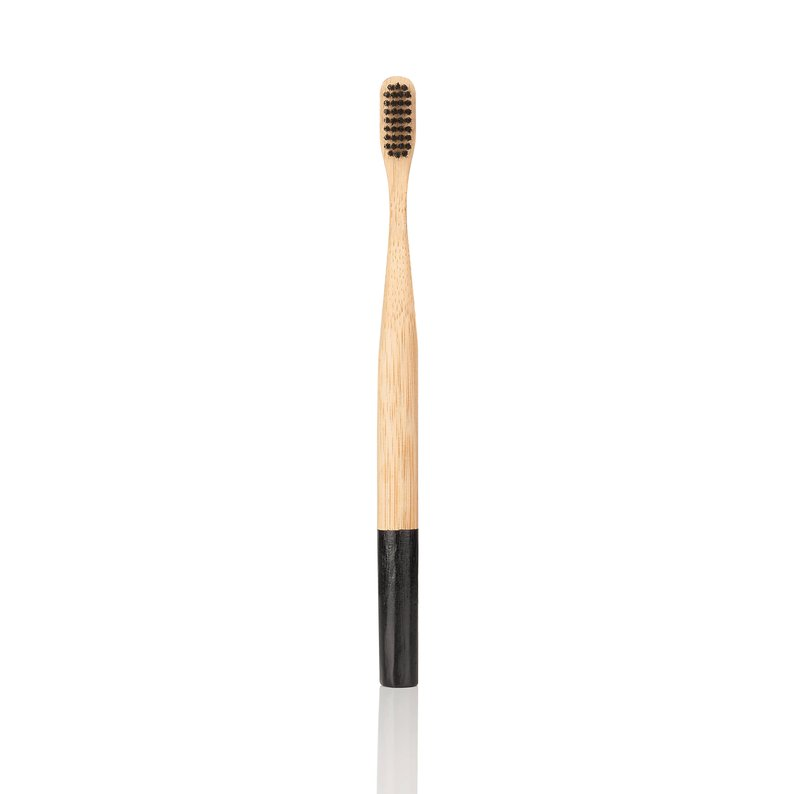
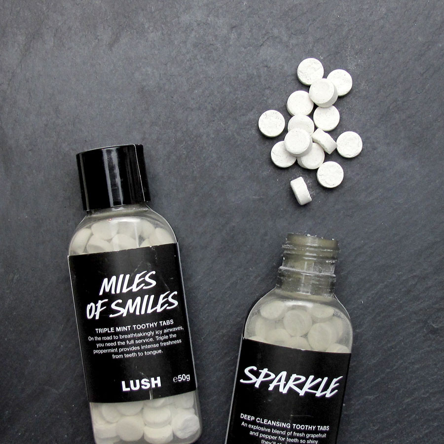
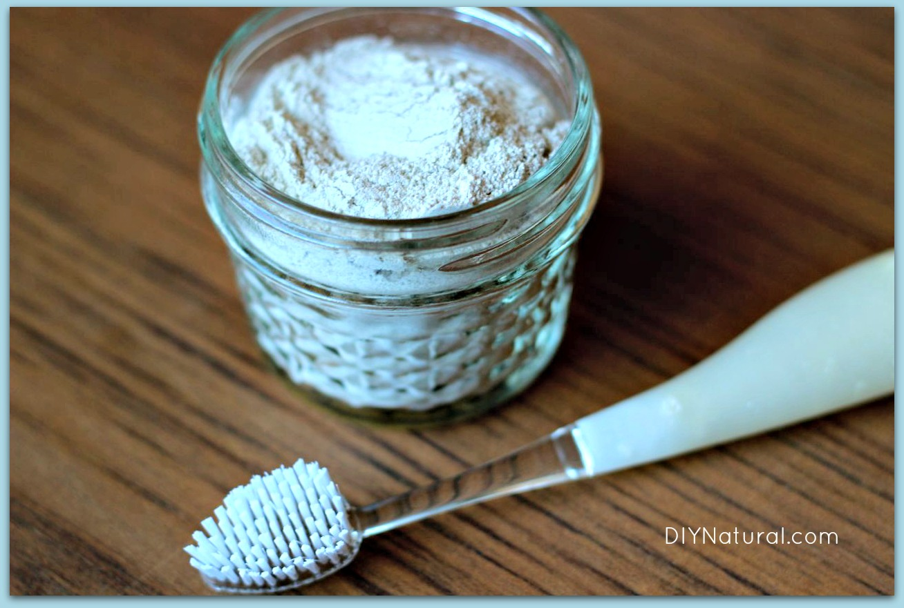

Often we think of being environmentally friendly as cutting CO2 emissions or reducing our red meat intake. However, it can be even simpler and easier than that. Here are some ways I am slowly becoming plastic free in my house.
- written by Ava Barclay-Yoo
Bamboo
Bamboo toothbrush
According to Susan Goldberg, the US releases 5o-million pounds of plastic from toothbrushes annually. Bamboo toothbrushes solve this problem. Sadly, it is hard to find a functional 100% plastic free toothbrush because of the bristles. But Brush with Bamboo seems to be the best bet. The bristles are only 38% plastic and 62% castor bean oil which is better than a 100% plastic toothbrush. A cool thing about the bamboo brushes is we can compost them ourselves. This is actually more eco-friendly than throwing it away. Visit How to Dispose of a Bamboo Toothbrush Properly for instructions.

Powder + Tablets > Paste
Toothpaste
So much of toothpaste is packaged in plastic. Lush offers an alternative called Toothy Tabs. Toothy tabs are small pills that one can bite into and then brush with water as usual. If the bottle is not 100% recyclable, one can invest in a brand that uses glass bottles. Another thing we can use is tooth powder. Just wet the toothbrush and dip it into the powder and brush as usual. DIY Natural also has a recipe for tooth powder for those of us who are self-reliant.


Clean You + Clean World = Clean Lifestyle
Shampoo, Conditioner, Soap, and Lotion
All these things can be bought without plastic! Below are weblinks of some good natural places to buy them.
We don't replace hairbrushes as often as toothbrushes or shampoo, but when the plastic breaks, they still end up in the landfill. See SHARCA to purchase an eco-friendly brush. For a little bit, I got super scared about having to give up hair ties, but fear not! Kooshoo has organic, cotton biodegradable hair ties.